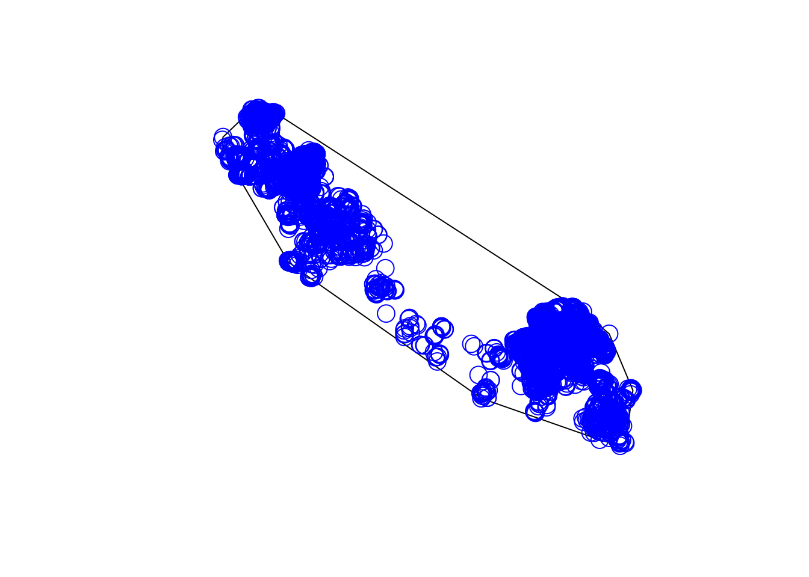

Linking to GEOS 3.11.0, GDAL 3.5.3, PROJ 9.1.0; sf_use_s2() is TRUE#install.packages("ks")
library(ks)
library(mapview)
scott <- st_read("clean_data/caribou.gpkg") %>%
st_transform(3005)Reading layer `caribou' from data source
`/Users/andy/dev/r-telemetry-workshop-nov-2023/clean_data/caribou.gpkg'
using driver `GPKG'
Simple feature collection with 17092 features and 15 fields
Geometry type: POINT
Dimension: XY
Bounding box: xmin: 1145290 ymin: 1143000 xmax: 1247842 ymax: 1227464
Projected CRS: NAD83 / BC Albersspt <- scott %>%
st_coordinates(scott)
x <- spt
st_boundary(scott) Simple feature collection with 17092 features and 15 fields (with 17092 geometries empty)
Geometry type: GEOMETRYCOLLECTION
Dimension: XY
Bounding box: xmin: NA ymin: NA xmax: NA ymax: NA
Projected CRS: NAD83 / BC Albers
First 10 features:
location.long location.lat herd tag.local.identifier animal.id animal.sex
1 -123.6036 55.90000 Scott car170 SC_car170 f
2 -123.5987 55.87343 Scott car170 SC_car170 f
3 -123.5903 55.87470 Scott car170 SC_car170 f
4 -123.4915 55.83741 Scott car170 SC_car170 f
5 -123.4740 55.87877 Scott car170 SC_car170 f
6 -123.4412 55.85412 Scott car170 SC_car170 f
7 -123.4325 55.91398 Scott car171 SC_car171 f
8 -123.4310 55.87820 Scott car170 SC_car170 f
9 -123.4280 55.87681 Scott car170 SC_car170 f
10 -123.4252 55.87287 Scott car170 SC_car170 f
animal.reproductive.condition tag.manufacturer.name tag.model
1 with calf: N ATS GPS Iridium
2 with calf: N ATS GPS Iridium
3 with calf: N ATS GPS Iridium
4 with calf: N ATS GPS Iridium
5 with calf: N ATS GPS Iridium
6 with calf: N ATS GPS Iridium
7 with calf: Y ATS GPS Iridium
8 with calf: N ATS GPS Iridium
9 with calf: N ATS GPS Iridium
10 with calf: N ATS GPS Iridium
date_time year month day hour minute geom
1 2013-09-23 03:01:00 2013 9 23 10 1 GEOMETRYCOLLECTION EMPTY
2 2013-10-09 03:01:00 2013 10 9 10 1 GEOMETRYCOLLECTION EMPTY
3 2013-10-30 03:01:00 2013 10 30 10 1 GEOMETRYCOLLECTION EMPTY
4 2014-08-11 03:01:00 2014 8 11 10 1 GEOMETRYCOLLECTION EMPTY
5 2013-11-09 18:01:00 2013 11 10 2 1 GEOMETRYCOLLECTION EMPTY
6 2014-08-07 03:01:00 2014 8 7 10 1 GEOMETRYCOLLECTION EMPTY
7 2014-09-18 19:02:00 2014 9 19 2 2 GEOMETRYCOLLECTION EMPTY
8 2013-12-06 10:02:00 2013 12 6 18 2 GEOMETRYCOLLECTION EMPTY
9 2014-07-08 11:01:00 2014 7 8 18 1 GEOMETRYCOLLECTION EMPTY
10 2013-11-23 18:01:00 2013 11 24 2 1 GEOMETRYCOLLECTION EMPTY# minimujm convex polygons
pts1 <- st_as_sf(x = scott, coords = c('location.long', 'location.lat'))
my_hull <- st_convex_hull(st_union(pts1))
plot(my_hull)
plot(pts1[1], cex=2, col="blue", add = T)
#
#
# set.seed(8192)
# samp<-200
# mus<-rbind(c(-2,2),c(0,0),c(2,-2))
# Sigmas<-rbind(diag(2),matrix(c(0.8,-0.72,-0.72,0.8),nrow=2),diag(2))
# cwt<-3/11
# props<-c((1-cwt)/2,cwt,(1-cwt)/2)
# x<-rmvnorm.mixt(n=samp,mus=mus,Sigmas=Sigmas,props=props)
# Kernal density
# using = h ref
Hpi1 <- Hpi(x=x)Warning in seq.default(a[id], b[id], length = bgridsize[id]): partial argument
match of 'length' to 'length.out'
Warning in seq.default(a[id], b[id], length = bgridsize[id]): partial argument
match of 'length' to 'length.out'
Warning in seq.default(a[id], b[id], length = bgridsize[id]): partial argument
match of 'length' to 'length.out'
Warning in seq.default(a[id], b[id], length = bgridsize[id]): partial argument
match of 'length' to 'length.out'
Warning in seq.default(a[id], b[id], length = bgridsize[id]): partial argument
match of 'length' to 'length.out'
Warning in seq.default(a[id], b[id], length = bgridsize[id]): partial argument
match of 'length' to 'length.out'
Warning in seq.default(a[id], b[id], length = bgridsize[id]): partial argument
match of 'length' to 'length.out'
Warning in seq.default(a[id], b[id], length = bgridsize[id]): partial argument
match of 'length' to 'length.out'Hpi2 <- Hpi.diag(x = x)Warning in seq.default(a[id], b[id], length = bgridsize[id]): partial argument
match of 'length' to 'length.out'
Warning in seq.default(a[id], b[id], length = bgridsize[id]): partial argument
match of 'length' to 'length.out'
Warning in seq.default(a[id], b[id], length = bgridsize[id]): partial argument
match of 'length' to 'length.out'
Warning in seq.default(a[id], b[id], length = bgridsize[id]): partial argument
match of 'length' to 'length.out'
Warning in seq.default(a[id], b[id], length = bgridsize[id]): partial argument
match of 'length' to 'length.out'
Warning in seq.default(a[id], b[id], length = bgridsize[id]): partial argument
match of 'length' to 'length.out'fhat.pi1 <-kde(x=x,H=Hpi1) Warning in seq.default(a[id], b[id], length = bgridsize[id]): partial argument
match of 'length' to 'length.out'
Warning in seq.default(a[id], b[id], length = bgridsize[id]): partial argument
match of 'length' to 'length.out'Warning in quantile.default(dobs, prob = (100 - cont)/100): partial argument
match of 'prob' to 'probs'fhat.pi2 <-kde(x=x,H=Hpi2)Warning in seq.default(a[id], b[id], length = bgridsize[id]): partial argument
match of 'length' to 'length.out'Warning in seq.default(a[id], b[id], length = bgridsize[id]): partial argument
match of 'length' to 'length.out'Warning in quantile.default(dobs, prob = (100 - cont)/100): partial argument
match of 'prob' to 'probs'plot(fhat.pi1)Warning in contour.default(fhat$eval.points[[1]], fhat$eval.points[[2]], :
partial argument match of 'level' to 'levels'Warning in contour.default(fhat$eval.points[[1]], fhat$eval.points[[2]], :
partial argument match of 'label' to 'labels'Warning in contour.default(fhat$eval.points[[1]], fhat$eval.points[[2]], :
partial argument match of 'level' to 'levels'Warning in contour.default(fhat$eval.points[[1]], fhat$eval.points[[2]], :
partial argument match of 'label' to 'labels'Warning in contour.default(fhat$eval.points[[1]], fhat$eval.points[[2]], :
partial argument match of 'level' to 'levels'Warning in contour.default(fhat$eval.points[[1]], fhat$eval.points[[2]], :
partial argument match of 'label' to 'labels'plot(fhat.pi1)Warning in contour.default(fhat$eval.points[[1]], fhat$eval.points[[2]], :
partial argument match of 'level' to 'levels'Warning in contour.default(fhat$eval.points[[1]], fhat$eval.points[[2]], :
partial argument match of 'label' to 'labels'Warning in contour.default(fhat$eval.points[[1]], fhat$eval.points[[2]], :
partial argument match of 'level' to 'levels'Warning in contour.default(fhat$eval.points[[1]], fhat$eval.points[[2]], :
partial argument match of 'label' to 'labels'Warning in contour.default(fhat$eval.points[[1]], fhat$eval.points[[2]], :
partial argument match of 'level' to 'levels'Warning in contour.default(fhat$eval.points[[1]], fhat$eval.points[[2]], :
partial argument match of 'label' to 'labels'